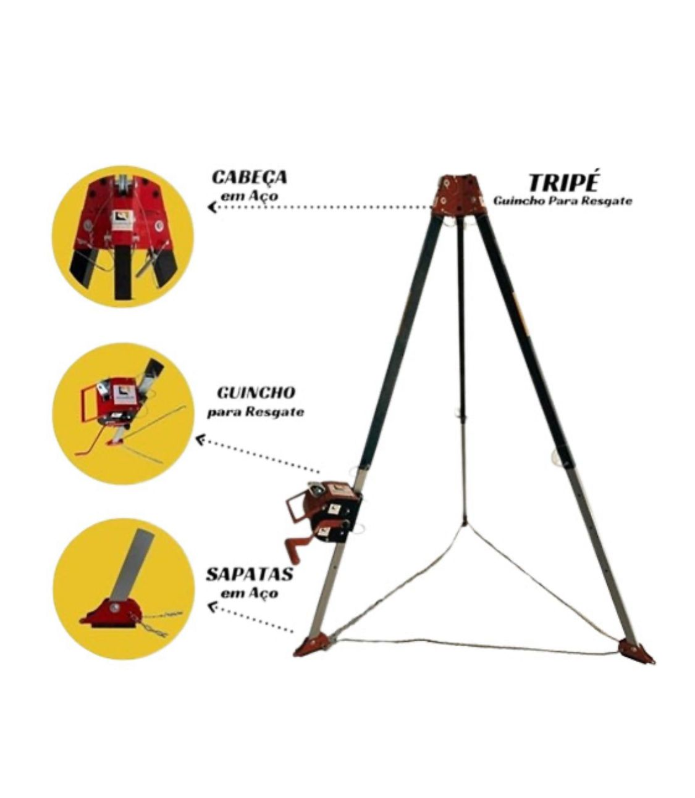
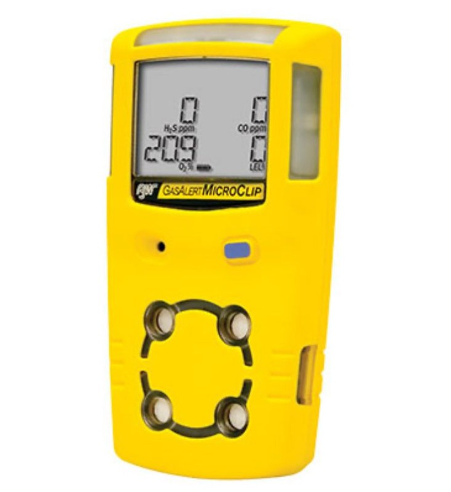
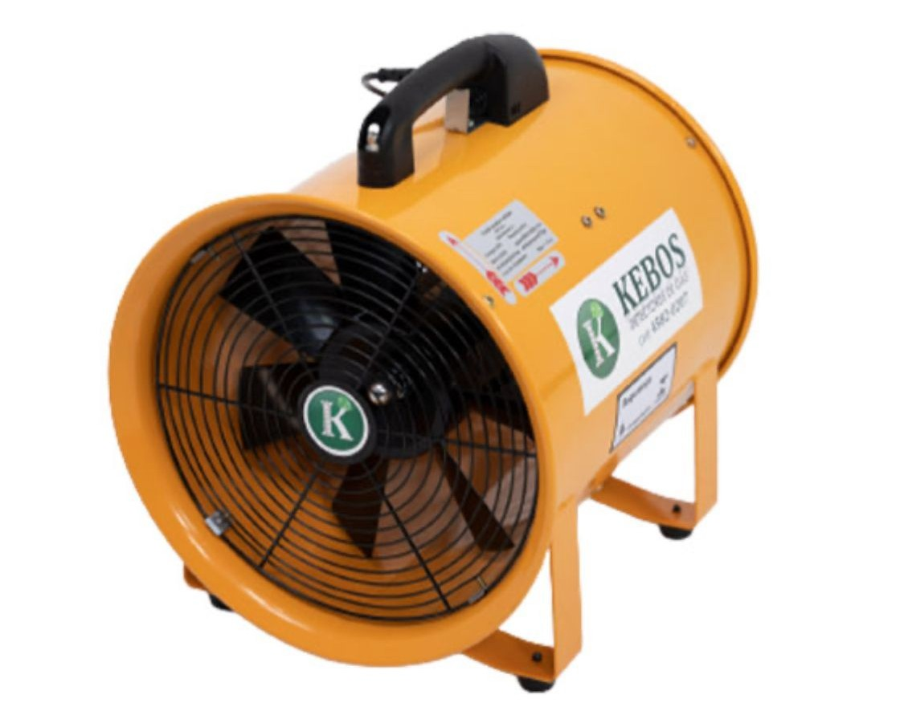
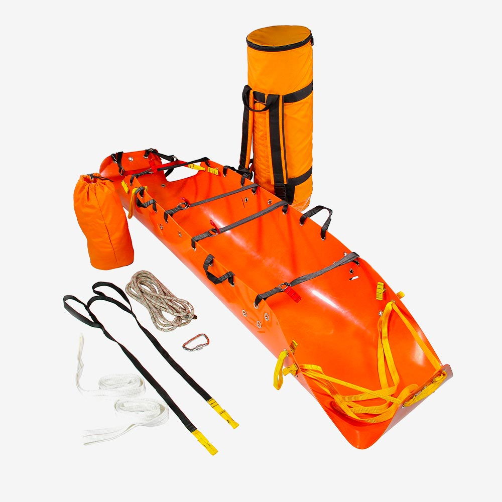
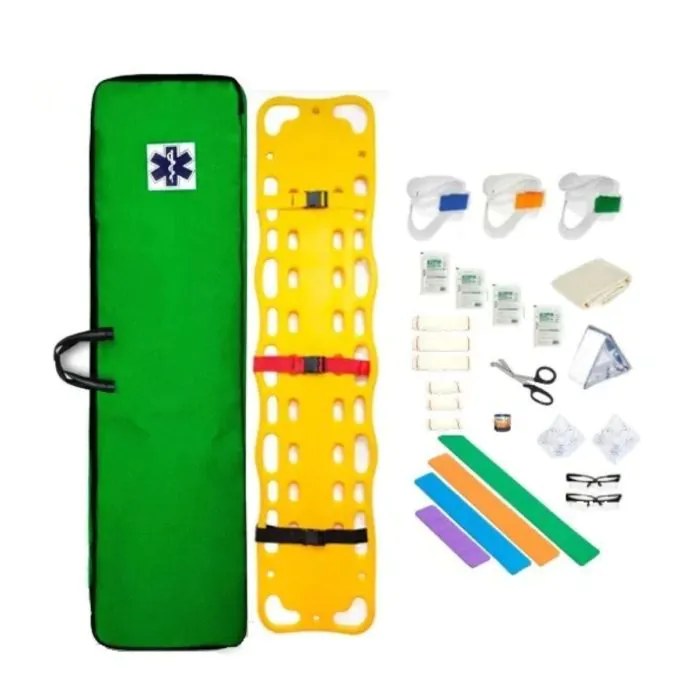
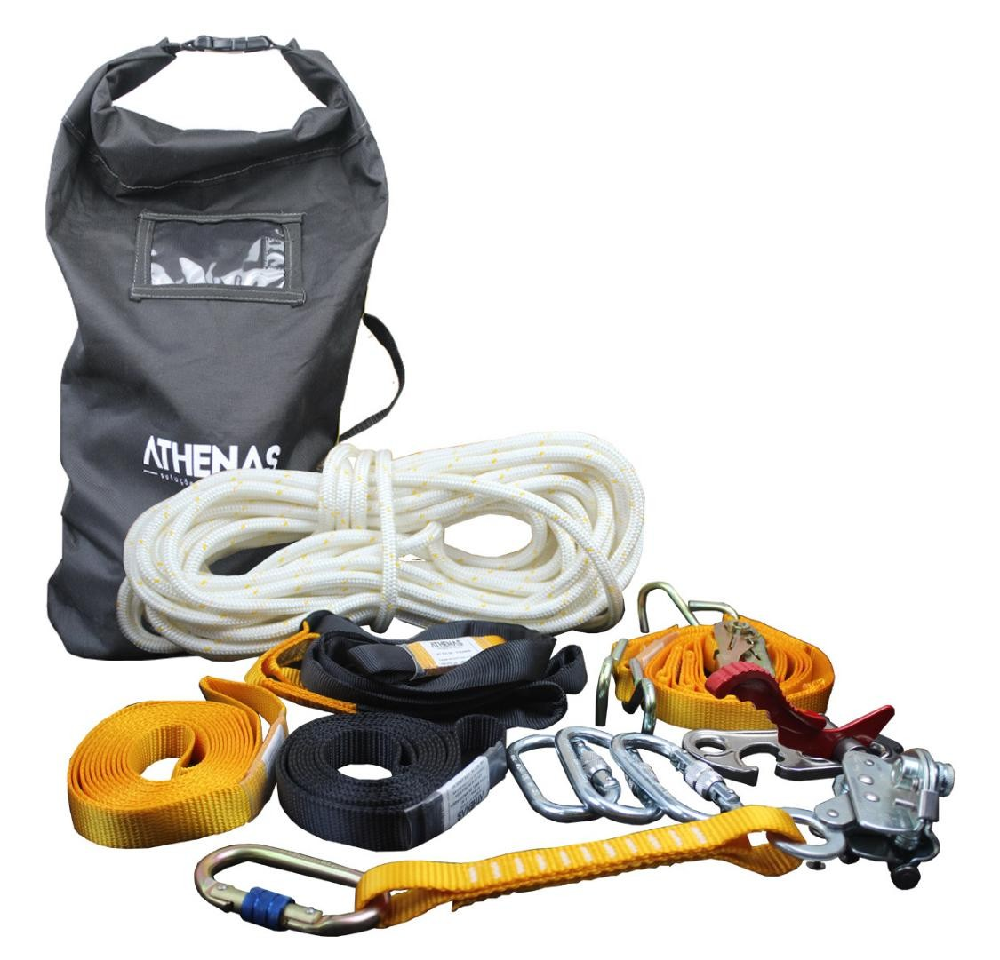
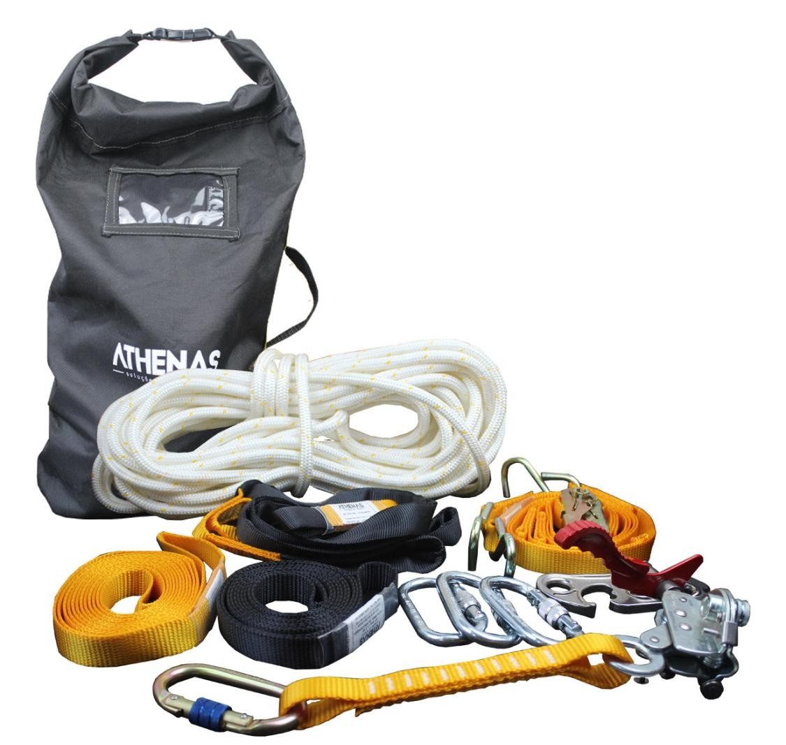

A ATST SEG disponibiliza uma ampla linha de equipamentos de segurança para locação, garantindo qualidade, praticidade e economia para empresas que buscam cumprir as normas regulamentadoras com responsabilidade.
// Locação de Equipamentos
// Equipamentos Disponíveis

Tripé de Resgate
Equipamento essencial para trabalhos em espaços confinados. Fabricado em alumínio leve e resistente, permite a fixação de guinchos, polias e talabartes, facilitando o resgate de trabalhadores com segurança.

Detector de Gases
Detecta atmosferas perigosas com presença de gases tóxicos, inflamáveis ou deficiência de oxigênio. Equipamento calibrado e com sensores de alta sensibilidade.

Ventilador Insuflador
Usado para ventilação forçada em espaços confinados, removendo contaminantes do ar e garantindo oxigenação adequada.

Maca Sked
Utilizada para resgate em espaços confinados, áreas de difícil acesso ou resgates verticais. Leve, flexível e resistente, a maca Sked permite a imobilização e transporte seguro da vítima, mesmo em ambientes estreitos ou com obstáculos.

Maca Primeiros Socorros
Maca rígida ideal para transporte seguro de vítimas em situações de emergência, com cintos de fixação.
// Equipamentos para Trabalho em Altura

Cordas para trabalho em altura
Possuímos cordas certificadas para trabalhos em altura. Cintos, mosquetões, trava quedas retrátil, para cordas e para cabos, talabartes de posicionamento, fitas de ancoragem e muito mais…

Trava-Quedas Retrátil
Equipamento essencial para trabalhos em altura, o trava quedas retrátil oferece liberdade de movimento ao trabalhador, travando automaticamente em caso de queda. Com cabo de aço ou fita resistente, possui sistema de freio interno que reduz o impacto no corpo durante a retenção. Ideal para uso em linhas verticais ou horizontais, proporciona segurança e conforto em tarefas como manutenção predial, construção civil, torres e muito mais.
Nossos equipamentos são certificados, inspecionados e estão prontos para uso com total segurança.

Kit Linha de Vida Temporária Horizontal
Ideal para garantir proteção coletiva em atividades em altura, o kit de linha de vida temporária permite a ancoragem segura de até dois trabalhadores simultaneamente. Com fácil instalação, ele inclui fitas de ancoragem, mosquetões, trava-quedas, absorvedor de energia e bolsa para transporte. Indicado para manutenção de telhados, obras civis e intervenções rápidas em locais elevados.
// Por que alugar conosco?
- ✅ Equipamentos certificados e inspecionados regularmente
- ✅ Suporte técnico e orientação no uso correto
- ✅ Prazos flexíveis para contratos de curta ou longa duração
- ✅ Entrega rápida na sua empresa ou obra